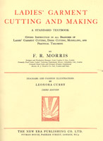

1940-1949
1942
Modern Pattern Design, by Harriet Pepin
The complete guide to the creation of patterns as a means of designing smart wearing apparel. Learn how to draft patterns from body measurements. (253 pages)
Go to Table of Contents (short) - Lists lesson titles
Go to Table of Contents (long) - Lists lesson titles and topics
Typos for this work
Early 1940's (undated)
Ladies' Garment Cutting and Making, by F. R. Morris
An advanced book on pattern drafting, covering all sorts of garments (including lingerie, dresses, blouses, shorts, trousers, coats, capes, evening gowns, etc.), as well as sections on how to construct the garment, economical layout, practical tailoring, tailoring and dressmaking stitches, how to "drape" a pattern, and pattern grading for the wholesale trade. The author explores the reasoning behind design decisions, and has a few sharp words to direct to the "cutters" of the industry.
Go to Table of Contents (long) - Lists lesson titles and topics
Typos for this work
Check the candidates' page to see what else will eventually be available.